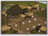

Requires
- Buildings:

- Arts:

Enables
- Buildings: 
Basic Building Statistics (can be modified by difficulty level, arts, skills, traits and retainers)
- Cost: 1755
- +420 to wealth from farms in this province
- +1 per turn to town growth from commerce within this province
- Provides food: 3
Description
Order and chaos are only a chopstick's length apart.
Paddies are artificially flooded fields where rice is grown. Rice is the staple of all Japanese people, from the lowly peasant harvesting the crop to the mightiest lord enjoying his dinner in exquisite luxury. Even taxes are measured and collected in koku, or measures, of rice. Each province's basic wealth and therefore potential tax yield is determined by its rice output. The unit of tax, the koku, was defined as the amount of rice needed to feed one man for one year. For a lord, then, a koku taken in tax directly represented one basic soldier added to his army; higher ranks would be paid the equivalent of many koku for their services. That it was possible to collect enough surplus rice to support large armies is a tribute to the efficiency of Japanese farmers over many centuries. Starvation was always a harvest away, but it was not as regular or as severe as in, say Europe, during the same period. Relatively speaking, Japanese farmers were far more productive in their work. The constant demand of rice to be paid as taxes, however, could be a terrible burden in lean years but the disloyalty of not paying tax could kill as surely as hunger.